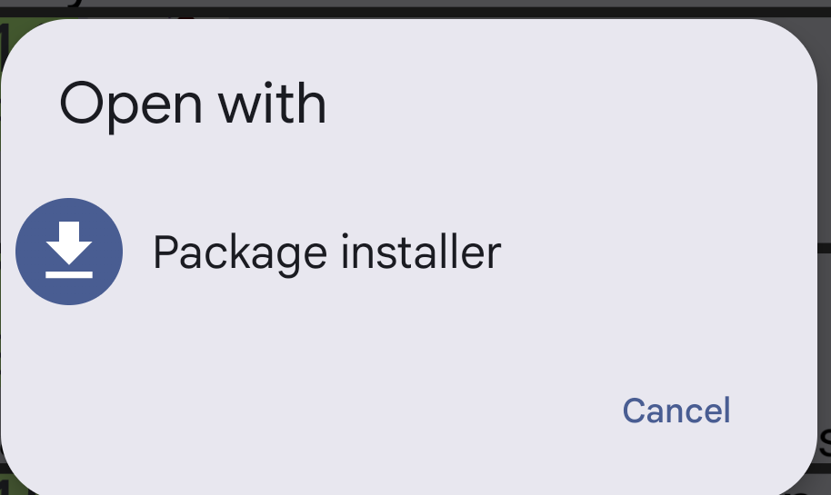
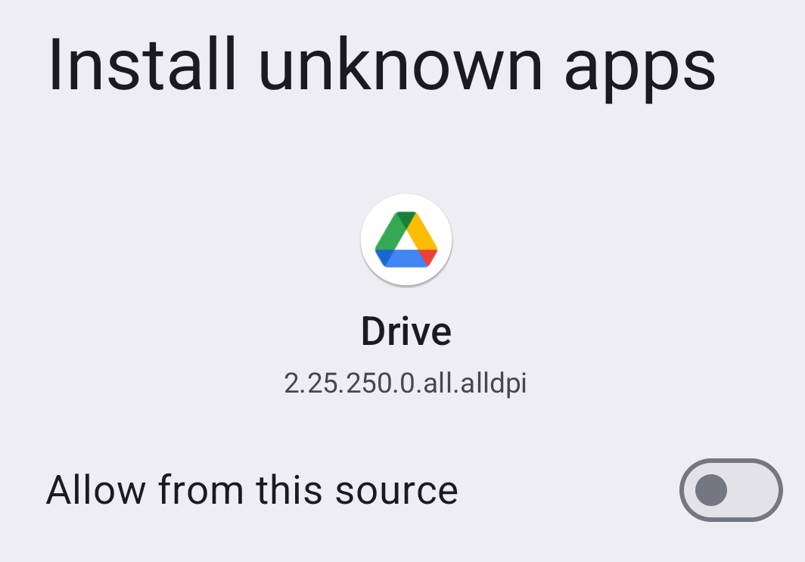
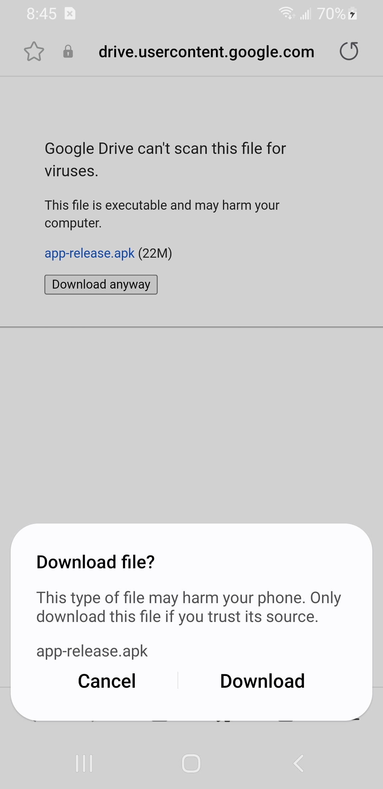
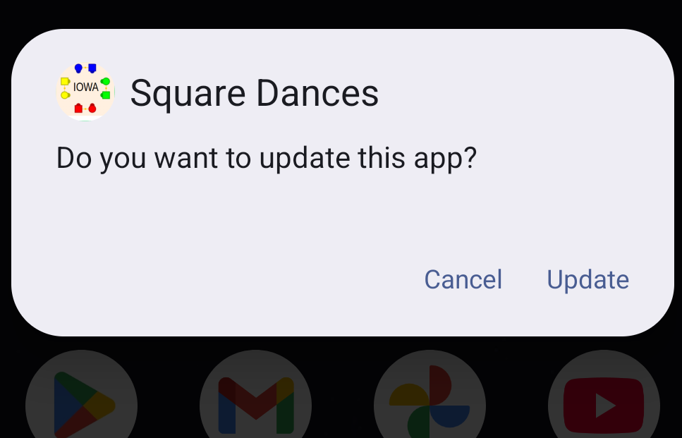
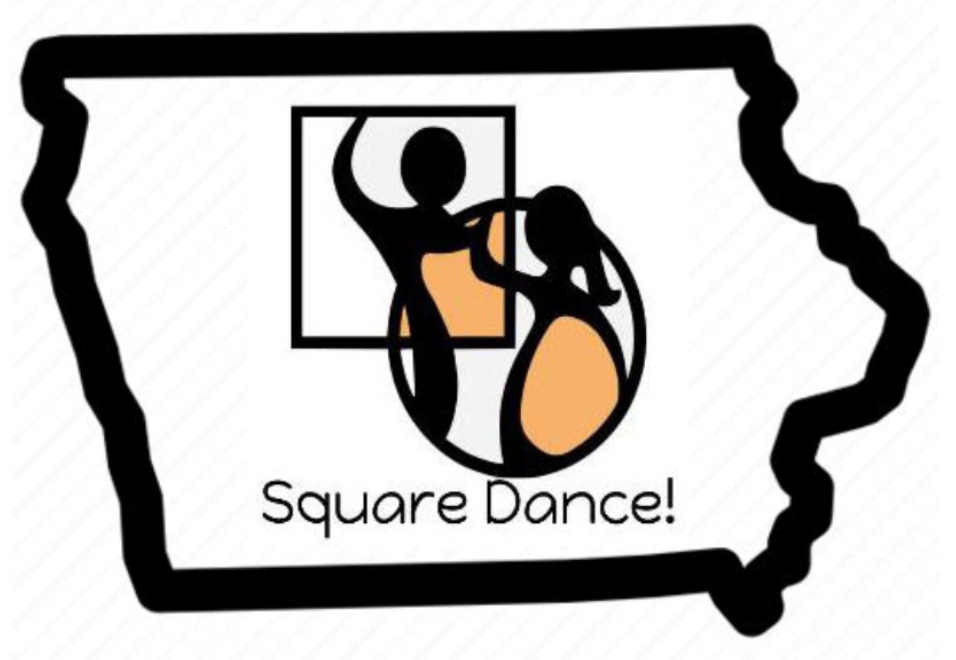

This is how to install the Android phone app containing a list of square dances in Iowa.
You may attempt download and installation without reading the instructions below BUT expect a request to permit app installation "unknown sources".
Depending on your phone, the exact screens you encounter might vary from those shown below.
After pushing the download button expect "Open with". Choose "Package installer".

By default, Android devices suppress app installation from sources outside the Android ecosystem such as the Play Store. They are characterized as "unknown". Although this is a sensible restriction for casual app searching, it gets in the way of app development by those outside that business model.
Move the slider button to the right. Note the "Drive" icon. That's the app source you are accepting.
The specific warning messages vary depending on the version of Android and the web browser you use.

Here's another example...

If you wish to see app installation permissions again and similar "unknown source" settings...
Downloading may take a moment. Expect a request to install or update the app. (This picture shows an update request; original installation looks similar.)

Expect a prompt to open the app for the first time. Please try it. A new app icon should be on the phone's "Home" screen.
In addition the app menu will contain this new icon...

This is the second version of the app. Push the download button to update schedule information. A red dot means the app cannot reach the schedule server. Some Android phones will adjust the screen to a landscape data format if you twist the phone.
This scrollable screen shows all Iowa dances known to the app. These include a few clubs in adjacent states.
The app is aware of the current date and changes the background color to a darker grey of dances already held.
Touch a dance to see all available details...